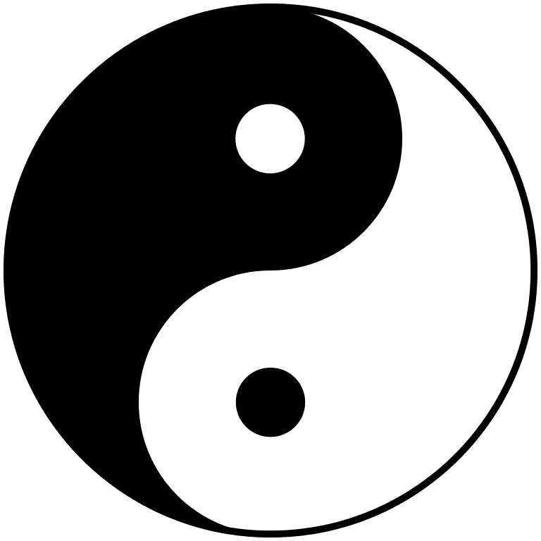

Rendering Text...
Dan Tian

Dan Tian is loosely translated as
elixir field
sea of qi
or simply energy center
Dantian are the qi focus flow centers, important focal points for meditative and exercise techniques such as qigong, martial arts such as tai chi chu, uan and in traditional Chinese medicine.
Historically the first detailed description of the lower Dantian is in the Laozi zhongjing from the 3rd century CE, it refers to the elixir-of-life field where "essence" and "spirit" are stored, it is related to regeneration and sexual energy, menstruation and semen. Traditionally, a dantian is considered to be a center of qi or life force energy. The dantian are important points of reference in neidan, qigong, neigong, tao yin, Taoist sexual practices, reiki and other self-cultivation practices of exercise, breathing, and meditation, as well as in martial arts and in traditional Chinese medicine. The lower dantian is particularly important as the focal point of breathing technique as well as the centre of balance and gravity. Dantian are focal points for transmutation of the three treasures jing, qi and shen.
Qi can be seen as a substance when it is stored in the form of Essence or jing, this can be refined by heating in these cauldrons into more rarefied states such as qi which is insubstantial and further still into shen which is more like the Western concept of mind although it is more often translated as "spirit".
Taoist and Buddhist teachers often instruct their students to centre the mind in the navel or lower dantian. This is believed to aid control of thoughts and emotions. Acting from the dantian is considered to be related to higher states of awareness or samadhi.
The Taoist concept of dantian as energy centers is similar to the Indian yoga concept of chakras as key points where prana is stored (see also nadi). The major difference, however, is that Taoist dantian are the major energetic storage mechanisms whereas the yogic chakras are not so much storage centers, but energetic vortices which act as intake and output ports. Many traditions consider the dantian and the chakras to be separate, albeit cooperative energetic mechanisms.
Different schools of thought categorize dantian in various manners. Three main dantian are typically emphasized
Lower Dantien
Xia Dantian
at the crossing of the horizontal line behind the Ren-6 acupoint and vertical line above the perinium, which is also called "the golden stove"
Jin lu
or the namesake elixir-of-life field proper, where the process of developing the elixir by refining and purifying essence jing into vitality qi begins.
Middle Dantien
Zhong Dantian
at the level of the heart, which is also called the crimson palace, associated with storing spirit (shen) and with respiration and health of the internal organs, in particular the thymus gland. This cauldron is where vitality or qi is refined into shen or spirit.
Upper Dantian Shang Dantian
Shang Dantian
at the forehead between the eyebrows or third eye, which is also called the muddy pellet, associated with the pineal gland. This cauldron is where shen or spirit is transmuted into wu wei or emptiness.
The term dantian used by itself usually refers to the lower dantian, which is considered to be the foundation of rooted standing, breathing, and body awareness in qigong, Chinese martial arts, and other martial arts. The lower dantian has been described to be like the root of the tree of life.
In speaking of the lower of the three energy centers, the term dantian is often used interchangeably with the Japanese word hara Chinese fu which means simply belly. In Chinese, Korean, and Japanese traditions, it is considered the physical center of gravity of the human body and is the seat of ones internal energy qi. A master of calligraphy, swordsmanship, tea ceremony, martial arts, among other arts, is held in the Japanese tradition to be acting from the hara.
The lower dantian corresponds to the yoga concept of the swadhisthana chakra. In yoga philosophy, it is thought to be the seat of prana that radiates outwards to the entire body.
NN WikiPedia NN